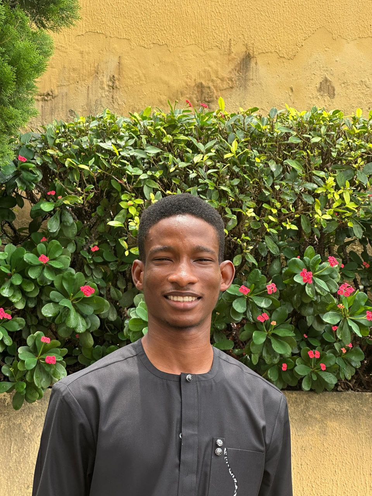

OLALEYE BOLAJI MAYOWA
Cybersecurity Analyst (Ethical Hacker)
Bolajimayowa635@gmail.com| +2348094417028, +2349156125211 | Magodo, Lagos State, Nigeria.
Objective
A dedicated and displined cybersecurity professional seeking employment as an Ethical Hacker, Adept at identifying vulnerabilites,securing systems and with a strong commitment to a profeesional development process of continuous learning. Eager to hone skills by continual practices.
Key skills
- Vulnerabiilty assessment
- Technical Knowledge of networking
- Well honed interpersonal, managerial and organizational skills
- Problem- solving, good communication,critical thinking and teamwork skills
Certifications
- ISC2 - Certified in Cybersecurity (CC)
- CISCO - Introduction to Cybersecurity
Professional Experience
Intern, Zsolutions (August - till date)
The internship at Zsolutions gave me hands on experience on running scans on network, identifying the hosts on the network and identifying vulnerabilities in the network.Key lessons learnt are the importance of changing devices passwords from the default username and logins like admin-admin,password123;Techniques in conducting social engineering attacks through phisphing.
Education
OND Nautical Science - Maritime Academy of Nigeria, Oron
(2020-2022)
- Best Graduating Ordinary National Diploma Cadet
- Held the National Diploma Executive Cadet Position (Mail-runner)
Techyjaunt Cybersecurity scholarship programme
- Taught aboout the cybersecurity terminologies and the cybersecurity threat landscape
- Learnt about network Topology, foundation of networking, network attacks and threats, network Architecture
- Learnt on the overview of wireshack in capturing network traffic
- Had practical sessions using Try Hack Me Rooms
Projects
- Basic Home Network Scan
- Created a home network and scanned the network using nmap to identify the hosts and ports
- Used Nmap -O to identify the operating systems running on the hosts
- Vulnerabiilty scan and assessment
- Used Nessus Tenable to conduct an advanced scan on the organization network to identify for vulnerabilites
- Mobile Application scan for vulnerabilities
- Used Yahzinni to inspect a mobile application for vulnerabilites that could be exploited by threat actors
- Try Hack Me Labs
Technical Proficiencies
- Operating Systems: Kali Linux,Windows
- Tools: Nmap,Nessus Tennable,subfinder,yahzinni
- Programming:HTML,CSS,Bash scripting(in progress)
Click here to know some fun fact about me